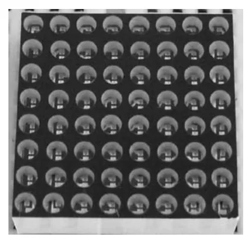
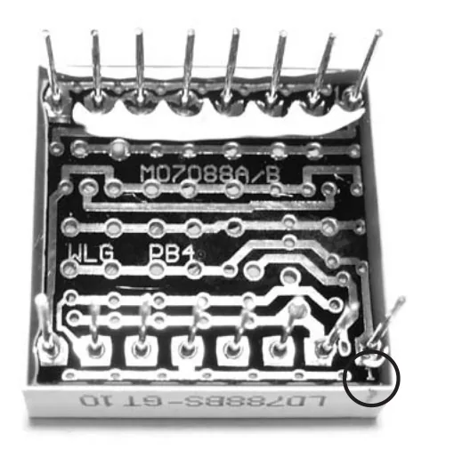
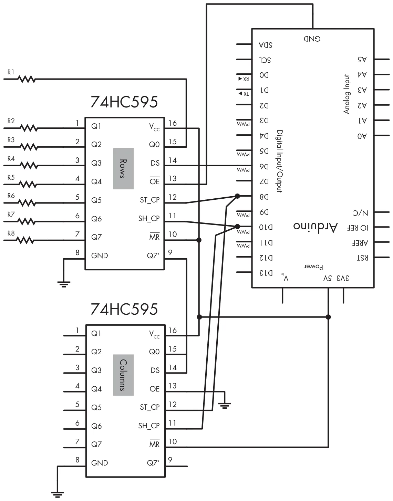

If you enjoyed experimenting with blinking LEDs, then you’re going to love LED matrix modules. An LED matrix module consists of several rows and columns of LEDs that you can control individually or in groups. The example that we’ll use (shown in Figure 6-16) has eight rows and eight columns of red LEDs for a total of 64 LEDs.

In this project we’ll build one circuit, and then we’ll use various sketches to create different effects.
The LED Matrix Schematic
The schematic symbol for the matrix looks a bit complex, as shown in Figure 6-17.
Notice that the numbering of the rows and columns of LEDs does not match the order of the pins beneath the matrix; see the circled pin numbers in Figure 6-17. On the underside of our matrix, pin 1 is indicated at the bottom right. For example, in Figure 6-18, you can see a tiny 1 printed below the pin.

The pins on the LED matrix are numbered clockwise, with pin 8 at the bottom left and pin 16 at the top right. We’ll control the matrix with two 74HC595 shift registers in a way that’s similar to the method used in Project 19.
Figure 6-19 shows the schematic for our project. Resistors R1 through R8 are 560 ohms each. One shift register controls the rows of LEDs, and the other controls the columns. The LED matrix (not shown here) is connected to the outputs at the bottom of this schematic with the pin connections listed in Table 6-3.
| Row SR Pin | Matrix Pin | Column SR Pin | Matrix Pin |
|---|---|---|---|
| 15 | 9 | 15 | 13 |
| 1 | 14 | 1 | 3 |
| 2 | 8 | 2 | 4 |
| 3 | 12 | 3 | 10 |
| 4 | 1 | 4 | 6 |
| 5 | 7 | 5 | 11 |
| 6 | 2 | 6 | 15 |
| 7 | 5 | 7 | 16 |
Making the Connections
Make the connections between the shift registers and the LED matrix (don’t forget the resistors between the output pins of the shift register, which controls the matrix rows, and the matrix row pins), as shown in Table 6-3.

Now to get the matrix working. The shift register marked “rows” in Figure 6-19 allows current to flow into each row of the matrix, and the “columns” shift register allows current to flow from each of the columns of the matrix to GND. We’ll use a simple sketch to test the setup in the next project. To turn on an LED, we need to control the matching row and column pins of the shift registers.